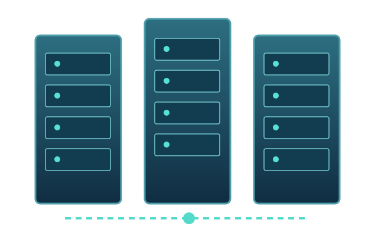

The Opportunity
Existing commercial properties may contain infrastructure that can support new technology uses and long-term asset value.
Existing buildings. Existing power. New revenue potential. OrionNet365 helps property owners and investors evaluate, develop, and operate technology infrastructure opportunities.

Large new developments can face significant power, construction, and approval challenges. Existing commercial assets may offer a compelling alternative—when properly qualified.
Existing commercial properties may contain infrastructure that can support new technology uses and long-term asset value.
Existing electrical service, connectivity, and building improvements can create a head start—subject to utility and technical verification.
One accountable development and operating model: site qualification, conversion planning, facility activation, and ongoing management.
We connect commercial real estate opportunity with the practical work of delivering usable technology infrastructure. Our model is designed for long-term operations, not simply project handoff.
Explore our operating model ↗
OrionNet365 Net-Bridge Services is our defined operating framework for connected, professionally managed technology facilities across a metropolitan area. By combining local presence with coordinated network and facility operations, the model is designed to support customers as their infrastructure needs evolve.
Regional site diversity, flexible connectivity and phased expansion create opportunities beyond any single property—without losing the benefits of local access and service coordination.
Discover Net-Bridge Services ↗
Have a commercial property, infrastructure asset, or investment opportunity worth evaluating? Let’s discuss its potential.